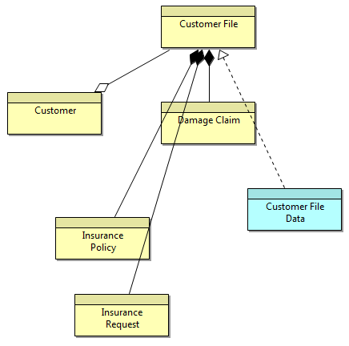
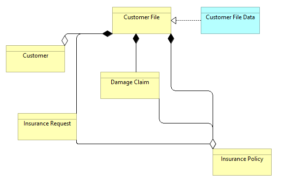

Apart from the view specific settings, the global setting Use orthogonal connection anchors from the Connection Preferences tab can be used to change the way connections are drawn.
Apart from the view specific settings, the global setting Use orthogonal connection anchors from the Connection Preferences tab can be used to change the way connections are drawn.By default, connections are drawn as straight lines from object to object. Bend-points can be added to a connection as detailed here. However, it is possible to set the overall connection router type so that the connections route around objects or are drawn orthogonally.
The connection router type can be set either from the main "View->Connection Router" menu or by right-clicking on a View or from the "Appearance" tab in the Properties Window when the View canvas is selected.
Apart from the view specific settings, the global setting Use orthogonal connection anchors from the Connection Preferences tab can be used to change the way connections are drawn.
The available router types are as follows:
Connections are drawn in straight lines. Bend-points can be added by the user.
Manual Router
Connections are routed orthogonally. Bend-points cannot be added by the user.
Manhattan Router